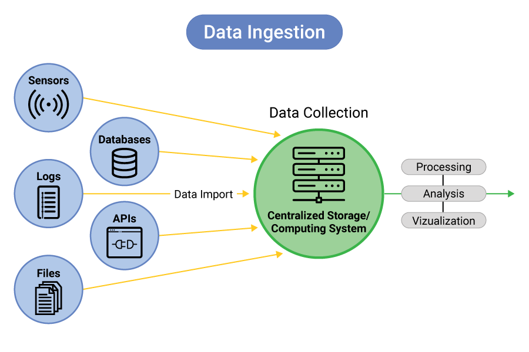

Orígenes matemáticos y filosóficos de la IA
Mucho antes de que existieran las computadoras modernas, filósofos y matemáticos ya se preguntaban si el pensamiento podía describirse mediante reglas lógicas. Estas ideas sentaron las bases de lo que hoy conocemos como Inteligencia Artificial.

Estrategias de recolección e ingestión
Las estrategias de recolección e ingestión definen cómo obtienes datos y los introduces en tu sistema. Los enfoques principales son batch (cargas periódicas), streaming (flujo continuo en tiempo real), API polling y web scraping. El patrón de pipeline, ETL o ELT, determina si transformas los datos antes o después de cargarlos.
Data Governance
El Data Governance es el marco de reglas, procesos y responsabilidades que asegura que los datos de una organización sean confiables, privados y de alta calidad.

Alan Turing y las bases de la computación
Turing propuso la idea de una máquina capaz de ejecutar cualquier proceso lógico. Su modelo teórico marcó el inicio del pensamiento algorítmico que haría posible la IA.
“Podemos considerar que el razonamiento es una forma de cálculo.” — Leibniz